La musique savante instrumentale s'est développée, en 300 ans, sur base de trois genres principaux : la symphonie, le quatuor à cordes et la sonate pour piano. A mesure que le temps a passé, seule la sonate s'est un peu essoufflée, certes pas au point d'avoir disparu mais quand même de s'être raréfiée, sauf en ex-URSS, volontiers conservatrice. Son schéma préétabli a été ressenti comme une contrainte par nombre de compositeurs de l'époque romantique qui ont préféré des formes plus libres (Nocturnes, ballades, préludes, études, ...). Cette désaffection fut particulièrement sensible en France : Fauré, Roussel, Debussy, Ravel et Messiaen n'ont pas contribué au genre.
A l'origine, le terme sonate (de l'italien, suonare, jouer) a désigné une pièce instrumentale, en opposition avec la cantate qui était chantée. Plusieurs instruments étaient éventuellement concernés (sonate a tre - ne pas confondre avec la sonate en trio qui se réfère au nombre de voix dans la conduite harmonique - , a quatro, a cinque, ...), ce qui n'est plus guère le cas depuis 250 ans à l'exception de la sonate en duo, pour piano et instrument (violon, violoncelle, alto, flûte, ...). Cette chronique n'aborde que la sonate pour piano seul.
Les sonates de Domenico Scarlatti (1685-1757), en fait des Essercizi selon l'appellation de leur auteur, ne comportaient qu'un seul mouvement et c'est resté le cas sous la plume du Padre Antonio Soler (1729-1783), celui-ci pas vraiment en avance sur son temps. Entre les deux, Baldassare Galuppi (1706-1785) a pratiqué une structure variable, allant de 1 à 4 mouvements. Cette émancipation formelle n'a cependant pas été accompagnée d'une évolution stylistique marquante, l'articulation du langage étant demeurée largement stéréotypée comme en témoignent ce tendre andante de la Sonate n°5 ou ce volubile (et répétitif) finale de la Sonate n°66 ( , extrait de l'intégrale des sonates, en cours chez Naxos). Au rayon des curiosités, connaissiez-vous les sonates fort plaisantes (n°4) du suédois Henrik Philip Johnsen (1717-1779), récemment exhumées par Bengt-Åke Lundin ? Quelques musiciens ont poursuivi (très) tardivement dans la voie tracée, écrivant des recueils d'importances variables, le piano(-forte) prenant ad libitum le relais du clavecin : Domenico Cimarosa (1749-1801) (32 Sonates) et Manuel Blasco De Nebra (1730-1784) (Sonate n° 1, extraite d'un très beau CD enregistré par Javier Perianes) ont compté parmi les maîtres d'un genre en pleine mutation.
La sonate, au sens moderne du terme, n'a décanté qu'à l'époque préclassique, sous l'impulsion de Carl Philip Emanuel Bach (1714-1788). Les récentes intégrales consacrées au compositeur font évidemment la part belle à sa centaine d'oeuvres, de nos jours indifféremment confiées au clavecin (Prussian Sonata n° 1) ou au piano (Sonate W55 n°4, Sonate W49 n°6). Le progrès est cette fois évident avec une gestion élaborée des silences, des rythmes (souvent brisés), des affects et des modulations. La liberté n'est cependant pas encore totale et un certain maniérisme demeure qui ne sera éradiqué qu'à la génération suivante.
Haydn, Mozart et les autres
C'est le classicisme viennois, représenté par Joseph Haydn (1732-1809) et Wolfgang Mozart (1756-1791), qui a fixé l'architecture de la sonate pour clavier en privilégiant une forme en trois mouvements (vif-lent-vif) (exceptionnellement en 2 et plus rarement en 4 mouvements, chez Haydn). Des variantes ont vu le jour ultérieurement, plus ou moins éloignées du modèle initial, tel l'opus 111 de Beethoven qui, limité à deux mouvements contrastés à l'extrême, incarne le point de rupture du genre. C'est indépendamment - et sans rapport véritable - qu'à la même époque est née l'expression "forme sonate" qui règle l'exposition et les reprises des thèmes d'une oeuvre (pas forcément une sonate) selon des successions prédéfinies, dont la plus simple est la structure A-B-A.
Les sonates de Haydn (n°59) et de Mozart (n°14, KV 457) sont généralement considérées comme un modèle d'équilibre, surtout quand elles sont jouées, comme dans les références citées, par Alfred Brendel. Tous les pianistes n'atteignent pas ce niveau de qualité d'où, méfiez-vous, l'existence d'interprétations fort inégales.
Le style classique expose, en effet, le piano au point que seuls les interprètes de grande classe se tirent d'affaire. Mal jouées, les sonates de Haydn ou de Mozart, même les chefs-d'oeuvre de la maturité, peuvent devenir ennuyeuses. Un pianiste un brin fantasque et techniquement irréprochable peut par contre faire un tabac dans cette musique et, au risque d'indisposer plus d'un puriste, j'apprécie les essais, hélas isolés, transformés par Fazil Say et Lang Lang. Marc-André Hamelin, qu'on n'attendait guère dans ce répertoire, enregistre actuellement, pour Hyperion, une intégrale Haydn qui promet.
Dans l'ombre de ces deux géants, quelques musiciens ont écrits des sonates anodines, Christian Gottlob Neefe (1748-1798) (Sonate n°12) et Johann Samuel Schroeter (1753-1788) (Sonate n°1), ou nettement plus aventureuses, Anton Eberl (1765-1807) (Grande Sonate, opus 39, qui se souvient avec 5 ans de retard de la Tempête de Beethoven). Les sonates d'Eberl viennent d'être enregistrées par John Khouri chez M+A, un CD recommandable même si j'aurais préféré un piano moderne. Il ne faudrait pas oublier la concurrence venue de Bohême : Leopold Kozeluh (1747-1818) (Sonate opus 20/3), Jan Ladislav Dussek (1760-1812) (Sonate opus 18/2 et surtout Sonate, opus 61, à la mémoire du Prince Louis Ferdinand de Prusse (Lento patetico - Tempo agitato, Tempo vivace)) et peut-être surtout le météore Jan Vaclav Hugo Vorisek (1791-1825), dont les oeuvres ont été enregistrées chez grand Piano (Sonate opus 20). Quant au danois Christoph Weyse (1774-1842), son oeuvre, de coupe classique, est parsemée de plaisantes bizarreries (Sonates n°5 à 8).
Beethoven, Schubert et les autres
La sonate pour piano a connu son âge d'or au 19ème siècle, favorisé, en particulier, par les progrès enregistrés dans la facture de l'instrument, passé du stade de piano-forte à celui de Hammerklavier. Beethoven et Schubert ont montré l'exemple en écrivant chacun un cycle de sonates qui ont d'emblée fait autorité.
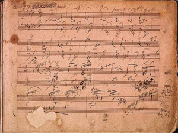
Beethoven : Sonate Opus 106 (Soin ?)
Les sonates de Beethoven ont été soigneusement numérotées par le compositeur, de 1 à 32, d'où vous n'avez aucune excuse de vous perdre. En société, vous tiendrez votre rang en :
1) évoquant avec le respect qui leur est dû (sans toutefois insister lourdement) les célèbres "Pathétique", "Clair de Lune", "Waldstein", "Les Adieux", "La Tempête" et "Appassionata",
toutes appellations fantaisistes non sollicitées par le compositeur, 2) en leur préférant les incontournables 5 dernières (n° 28 à 32, en insistant sur l'énorme n°29, opus 106), et 3) plus subtilement, en manifestant votre admiration pour les bien trop négligées sonates de (relative, 26 ans quand même !) jeunesse, par exemple, l'admirable n°4, opus 7. Si vous voulez vraiment vous poser sans nécessairement passer pour un frimeur, vous évoquerez fort à propos les 3 oeuvres de réelle jeunesse (14 ans !) connues sous le nom de "Sonates à l'Electeur, WoO 47" (n°2).
Note : En explorant la toile vous découvrirez les 32 sonates sous les doigts de Daniel Barenboim. J'aime la façon dont il les joue comme j'apprécie sa direction d'orchestre. L'homme aux quatre passeports (Argentin, Espagnol, Israélien et Palestinien !) n'est pas moindre que le musicien et son engagement pacificateur au service d'une hypothétique réconciliation judéo-palestinienne mérite le respect. Un grand Humaniste de notre temps !
En explorant davantage, vous découvrirez les interprétations absolument remarquables d'un pianiste américain trop méconnu de ce côté de l'Atlantique, Richard Goode, aussi à l'aise dans les oeuvres de jeunesse et de maturité que tardives (Sonates n°6, n°17, n°31).
Les oeuvres homologues de Schubert sont, en théorie, numérotées de 1 à 21, à condition de comptabiliser les oeuvres inachevées, (n°8, 10, 12 et 15), une spécialité schubertienne. En cas de doute, référez-vous au numéro d'inventaire du catalogue d'Otto Erich Deutsch, voire, à la tonalité annoncée. Les plus merveilleuses sonates (D 894, D958, D 959 et D960) datent, sans surprise, de l'extrême fin de la courte vie de leur auteur.
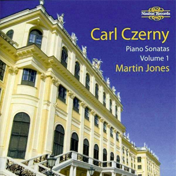
Czerny : Intégrale des sonates
Les contemporains, dits mineurs, ne le furent pas tant que cela : Muzio Clementi (1752-1832), l'aîné de la bande, a écrit plus de 100 (!) sonates, d'excellente facture (opus 50 n°5) et Joseph Wölfl (1773-1812), un rival de Beethoven dans les salons viennois, 68 (opus 50). Les successeurs ont revu les contingents à la baisse : John Field (1782-1837) n'en a écrit que 4 (opus 1 n°3), tout comme Carl Maria von Weber (1786-1826) (opus 24, 39, 49 et 70). Johann Nepomuk Hummel (1778-1837) en a écrit 9 (n°2, opus 13, n°5, opus 81, la plus connue, n°6, opus 106), Ferdinand Ries (1784-1838), 7 (opus 26), Carl Czerny (1791-1857), 11 (Sonate n°6, 50 minutes de belle musique mais n'oubliez pas la n°7 ou la n°9 aux accents nettement beethoveniens). Ne manquez surtout pas l'intégrale Czerny, en cours chez Nimbus avec Martin Jones au piano ! Norbert Burgmüller (1810-1836) n'en a édité qu'une seule mais il est mort prématurément à 26 ans (Sonate, opus 8). Pas (encore) de musiciens français penserez-vous ? Alors précipitez-vous sur les deux Sonates de Pierre-Alexandre-Boely (1785-1858), on y sent le souffle du (jeune) Maître de Bonn (Plages 1 à 3 & 24 à 26).
Les grands "classiques" du romantisme
Les sonates se firent moins nombreuses à l'ère romantique, beaucoup de musiciens ayant préféré des structures musicales plus narratives, rhapsodiques ou cycliques. De Felix Mendelssohn à Johannes Brahms, la plupart des grands compositeurs se sont contentés de trois sonates, pas une de plus, allez savoir pourquoi : Mendelssohn (opus 6, 105 et 106, qui commence sans complexe comme le même opus 106 de Beethoven, le souffle en moins), Schumann (opus 11, 14 et 22, superbes évidemment), Chopin (opus 4, 35, prise ici dans un tempo infernal, et 58) et Brahms (opus 1, 2 et 5, des oeuvres de jeunesse uniquement).
La sonate de ...
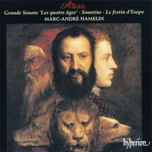
Alkan : Les 4 âges
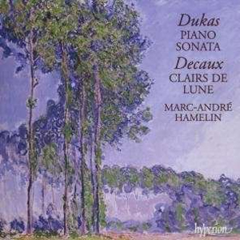
Dukas : la Sonate
La seconde moitié du 19ème siècle a été frappée par un phénomène singulier, c'est le cas de le dire : l'oeuvre isolée donc inéchangeable dont le prototype parfait serait, pour l'éternité, La Sonate de Liszt (1853). Structurellement, elle n'est plus de la musique pure, dépourvue de connotation extra-musicale. Les analystes ont, au contraire, voulu y déceler un argument littéraire dans l'affrontement dramatique de ses deux thèmes principaux (Faust & Méphisto ?), une idée que Liszt associait à la musique de l'avenir au sens où il l'entendait, la révolution wagnérienne était en marche.
L'oeuvre unique et monumentale n'était pourtant pas une invention lisztienne car dès 1847, Charles Valentin Alkan (1813-1888) avait montré la voie avec sa Grande sonate, opus 33, Les quatre âges de la vie (ici dans une interprétation impressionnante de Ronald Smith) : c'était déjà une oeuvre à programme, aux proportions quasiment symphoniques.
Il revient par contre à Paul Dukas (1865-1935) d'avoir réussi l'oeuvre parfaite (Sonate - 1900), celle qui sans excès ni regret a tourné la page du romantisme et ouvert celle de la modernité.
Les sonates nationales
L'éveil des consciences nationales, vers 1850, a diversifié l'offre des sonates et, sans surprise, trois pays volontiers conservateurs (au meilleur sens de l'expression : qui ne conservent pas n'importe quoi !) ont cultivé le genre, de plus jusqu'à nous jours : l'URSS, la Grande-Bretagne et les USA.
1) La sonate russe
Les artistes russes ont respecté les formes traditionnelles davantage par opportunisme que par conviction : le régime stalinien ne leur a guère laissé le choix. L'ingéniosité qu'ils ont déployée pour faire du neuf avec du vieux, pendant 26 années de terreur (1927-1953), n'en est que plus admirable. Même en-dehors de cet intervalle temporel, la sonate russe n'a cessé de connaître de beaux jours.
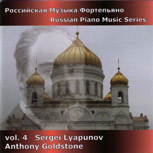
Lyapunov : les sonates
Pionnier parmi les pianistes-compositeurs, il était normal qu'Anton Rubinstein (1829-1894) écrive des oeuvres à son usage : ses 4 sonates virtuoses (n°3) valent bien un petit détour. Si Mili Balakirev (1837-1910) (Sonate n°1, Sonate n°2) impressionne moins que Piotr Ilitch Tchaïkovsky (pour rappel : Sonate, opus 37), ne manquez surtout pas la magnifique Sonate, opus 27 de Sergei Lyapunov (1859-1924), le frère du grand mathématicien Alexander Lyapunov, connu de tous les spécialistes de la théorie du chaos. Quant au mal-aimé, Alexandre Glazounov (1865-1936), il n'a pas démérité dans ses Sonates n°1 & 2.
Quelques musiciens connus ont opéré la transition vers l'ère moderne :
Alexandre Scriabine (1872-1915) a écrit 12 oeuvres d'autant mieux appréciées par les connaisseurs que leur numéro est proche de 12, à l'inverse du grand public qui trouve la rhétorique des jeunes années plus accessible (n°1 à 4, n°8, n°10).
Nikolaï Medtner (1879-1951) a écrit 14 sonates identifiables par leur numéro d'opus voire leur sous-titre (Le Vent nocturne, opus 25 n°2, Reminiscenza, opus 38, Romantica, opus 53 n°1, Minacciosa, opus 53 n°2). Leur lyrisme, apparenté à celui de Rachmaninov, une pointe de détachement en plus, devrait séduire un public toujours plus nombreux. Quant aux deux sonates de Serge Rachmaninov (1873-1943), elles ne comptent étrangement pas parmi ses oeuvres les plus souvent jouées (n°1, opus 28, et n°2, opus 36).
J'ai évoqué par ailleurs le génie météorique d'Alexei Stanchinsky (1888-1914) : c'est l'occasion de rappeler à votre attention les deux merveilleuses sonates qu'il a eu le temps d'écrire (n°1, n°2). Quelle perte !
A propos, saviez-vous que Boris Pasternak (1890-1960), Prix Nobel de littérature en 1958 (qu'il a été contraint de refuser), auteur du Dr Jivago, fut musicien avant d'être littérateur ? Que pensez-vous de sa Sonate en si mineur ?
Deux compositeurs ont écrit quelques oeuvres qui pour être significatives, sont rarement mises en avant : les 5 sonates de Nikolai Roslavets (1881-1944) (n°5) et celles d'Alexander Mosolov (1900-1973) (n°1, n°2, n°4), toutes antérieures à 1927. Elles datent donc de l'époque léniniste où le modernisme fleurissait en URSS, volontiers tapageur dans le cas de Mosolov et plus intellectuel chez Roslavets. Inutile d'ajouter qu'ils furent ensuite persécutés par le régime, singulièrement Roslavets.
Feinberg : les sonates
Les 12 sonates de Samuil Feinberg (1890-1962) révèlent un musicien exceptionnel, à découvrir absolument sur le site du label BIS (écoute libre !). Les 4 dernières passent pour plus conventionnelles, davantage à l'écoute des recommandations du régime. Pourtant elles ne le furent pas encore assez pour lui éviter des ennuis, à tel point que le musicien, dégoûté, cessa d'écrire.
On ne présente plus Serge Prokofiev (1891-1953) : parmi ses 9 sonates achevées (n°1, n°8, n°9), les trois "Sonates de guerre (39-45)" (n° 6 à 8) sont les plus régulièrement jouées.
Nikolaï Myaskovsky (1881-1950) a publié 9 sonates (n°2, n°4, n°5), Igor Stravinsky (1882-1971), une seule (Sonate), Sergei Protopopov (1893-1954), 3 (n°2, dans la mouvance du dernier Scriabine), Leo Ornstein (1893-2002), qui a émigré aux USA dès l'âge de 13 ans, 8 (n°4, n°7), Alexander Tcherepnine (1899-1977), 2 (n°1, n°2), Aram Khachaturian (1903-1978), une seule (Sonate, à écouter) et Dimitri Kabalewsky (1904-1987), 3 (n°3). Quant à Dimitri Schostakovitch (1906-1975), il s'est peu consacré au genre et cela est d'autant plus étonnant qu'il était lui-même excellent pianiste (Vous avez le choix entre l'hypermoderne n°1 et la plus "classique" n°2).
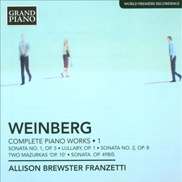
Weinberg : les sonates
Mieczyslaw Weinberg (1919-1996), le protégé de Schostakovitch, a proposé 6 sonates (numérotées) aussi incontournables que les quatuors et les symphonies déjà évoqués dans une chronique antérieure. Le label, Grand Piano, actuellement distribué par Naxos, a enregistré ces oeuvres avec le concours de la pianiste Allison Brewster (4 CD essentiels). Si vous arrivez à la dénicher, l'interprétation de Murray Mc Lachlan est tout aussi excellente (Sonates n°2, n°3 et n°5); elle est parue dans la collection "Russian piano music series" chez Divine Arts.
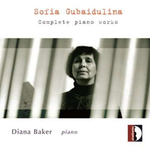
Gubaidulina : Oeuvres pour piano
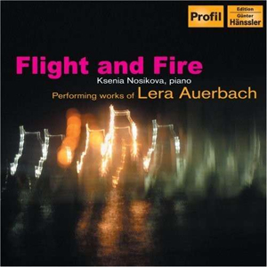
Auerbach : 2 Sonates
Plus près de nous, l'intérêt pour la sonate n'a absolument pas faibli, l'énumération suivante en témoigne : Guerman Galynine (1922-1966), encore un héritier de Schostakovitch (n°1 à 3), Alfred Schnittke (1934-1998) (n°1, n°2, n°3), Rodion Shchedrin (n°1), Boris Tchaïkovsky (1925-1996) (n°1), Boris Tishchenko (1939-2010) (n°4, amusante n°8, n°9), Sofia Gubaidulina (Sonate) et Galina Ustvolskaya (1919-2007) (n°2, n°3, n°6, oreilles sensibles ...). Enfin, ne passez pas à côté des deux sonates de Lera Auerbach (1973- ), reprises sur un CD passionnant, paru chez Profil (n°1 "La Fenice" : plages 1 à 6 et n°2 "Il Segno" : plages 7 à 10).
Nikolai Kapustin (1937- ) est un cas à part dans le paysage soviétique : ses 20 sonates (pour l'instant) empruntant clairement à l'univers du jazz (n°2, n°6, n°12, n°16), elles ont naturellement dû attendre la Glasnost pour émerger à l'air libre.
2) La sonate anglaise
Les anglais, bien que capables de réelles excentricités, sont restés attachés à la tradition de la sonate. Longtemps après le précurseur, Sir William Sterndale Bennett (1816-1875) (Sonate n°1), Frank Bridge (1879-1941) (Sonate), John Ireland (1879-1962) (Sonate), Cyril Scott (1879-1970) (Sonate, opus 66), Arnold Bax (1883-1953) (Sonate n°3), Benjamin Dale (1885-1943) (Sonate en ré mineur), Arthur Bliss (1891-1965) (Sonate), Roger Sessions (1896-1985) (Sonates n°1, la plus accessible, n°2, n°3) et William Alwyn (1905-1985) (Sonata alla Toccata) ont ponctuellement contribué au genre avec talent. D'autres ont conçu des cycles nettement plus ambitieux :
York Bowen (1884-1961) est peu connu sur le continent et cependant il vaut nettement plus que son surnom réducteur de "Rachmaninov anglais", qui ne peut satisfaire personne à commencer par les intéressés. Le label Hyperion a publié un double CD passionnant reprenant ses 6 sonates (Sonate n°5) dont les deux dernières évoquent effectivement le grand compositeur russe. Notez que la Sonate n°4 étant perdue, l'enregistrement mentionné l'a remplacée par la Short Sonata, opus 35 n°1.
Leon Dudley Sorabji (1892-1988) fut un artiste complètement excentré qui a vécu quasiment reclus, écrivant une oeuvre essentiellement pianistique qu'il refusait qu'on joue (d'où la difficulté de trouver des références sonores) ! Cumulant les influences de Max Reger et Ferruccio Busoni, cette oeuvre ne convient pas aux estomacs sensibles, d'ailleurs les 5 sonates et les 6 symphonies pour piano solo (Symphonie n°5), qu'on pourrait assimiler à autant de sonates, attendent toujours un enregistrement intégral.
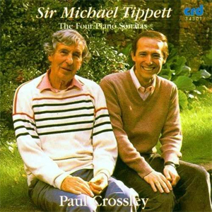
Tippett : les 4 Sonates
Pour les mélomanes continentaux, Sir Michael Tippett (1905-1998) a vécu dans l'ombre de Britten mais pour les insulaires, il n'en fut rien et il a d'ailleurs reçu tous les honneurs dont il pouvait rêver. Si le mélomane averti connaît à tout le moins son monumental oratorio, A Child of our Time, ce sont ses 4 Sonates pour piano qui reçoivent ici notre attention (n°1, n°2, n°3). Je les aime particulièrement sous les doigts de Paul Crossley, une découverte absolument essentielle.
Alun Hoddinott (1929-2008) est un compositeur gallois que vous ne connaissez sans doute pas sauf si vous êtes un fidèle spectateur de l'émission "Place Royale". Il a, en effet, composé une fanfare pour la cérémonie de mariage de Camilla Parker Bowles et du Prince Charles de Galles ! Il n'a heureusement pas écrit que cela mais seuls les britanniques en savent quelque chose, en particulier qu'il est membre du club fermé des auteurs de 9 Symphonies. Ses 10 Sonates pour piano comptent parmi ses oeuvres les plus accessibles et elles valent assurément le détour. Elles ont été enregistrées par Martin Jones sur un double CD paru chez Nimbus.
Enfin, achevons la liste initiale, non sans déplorer l'absence de Benjamin Britten (1913-1976), muet dans le genre : Constant Lambert (1905-1951) (Sonate, légère dans tous les sens du terme mais fort bien construite), l'irlandais Howard Ferguson (1908-1999) (Sonate, opus 8), Stanley Bate (1911-1959) (Sonate, opus 59, à découvrir), Harold Truscott (1914-1992) (Sonates n°9, 13 & 15, excellentes), Bernard Stevens (1916-1983) (Sonate, opus 25), Robert Simpson (1921-1997), autant d'exemples qui devraient interpeller les mélomanes curieux. Le gallois William Mathias (1934-1992) (Sonate n°1) et l'écossais John McLeod (1934- ) (Sonates n°3, à écouter, n°4, n°5) complètent ce tableau. Plus près de nous, ne passez pas à côté des sonates de Ian Venables (1955- ) "in memoriam DSCH" et de David Jennings (1972- ).
3) La sonate américaine
Vers 1914, la musique savante américaine ne rayonnait guère encore intensément, défendue par Edward MacDowell (1860-1908) (Sonates n°1 Tragica, n°2 Eroica, n°3 Norse, n°4 Keltic), Charles Tomlinson Griffes (1884-1920) (Sonate) et surtout Howard Hanson (1896-1981) (Sonate, opus 11, sans doute la plus intéressante !).
Cela n'allait cependant pas durer et les musiciens américains ont rapidement refait leur retard, refondant leurs origines européennes dans un moule culturel différent. La sonate a joué un rôle dans cette entreprise de rattrapage.
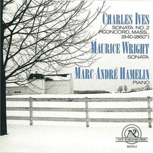
Ives : Concord Sonata
Une oeuvre singulière a particulièrement fait date, la "Concord Sonata" de l'américain Charles Ives (1874-1954). Elle porte le n°2, dans le catalogue du musicien et elle a complètement éclipsé la n°1. Cette oeuvre visionnaire est d'une audace sans équivalent à l'époque de sa composition (1916), même en Europe. Notez que sa genèse fut lente, certains matériaux remontant à 1904. L'oeuvre est complexe et son tendre 3ème mouvement, avec ses réminiscences beethoveniennes (cherchez, elles sont facilement repérables !), doit se mériter, pas question de court-circuiter les autres !
Vous exigerez naturellement l'une des interprétations de Marc-André Hamelin : deux enregistrements existent que vous départagerez en fonction de vos préférences pour l'autre sonate figurant en complément, soit celle, postromantique, de Samuel Barber (1910-1981) soit celle, plus aventureuse, de Maurice Wright (1949- ). Toutefois, je ne vous blâmerai pas si vous optez pour la version de Philip Mead, afin de bénéficier de sérieux bonus sur le double CD qu'il a enregistré (Sonate n°1 et Five Take-Offs). Un quatrième CD, dû à Donald Berman, vous donnera plus de fil à retordre en vous proposant les étonnantes Etudes en quarts de tons.
Trois oeuvres isolées, pas tellement connues, ont suivi la sonate de Ives : elles sont dues à Aaron Copland (1900-1990) (Sonate (1921)), Elliot Carter (1908-2012) (Sonate (1946), une oeuvre de jeunesse, si l'on peut dire !) et Samuel Barber (Sonate (1949)).
J'ai également commenté par ailleurs les Sonates (et Interludes) de John Cage (1912-1992) qui ne sont d'ailleurs pas vraiment des sonates. J'ai également consacré une chronique enthousiaste à George Rochberg (1918-2005) dont le label Naxos a enregistré la musique pour clavier. Vous trouverez la Sonata seria dans le Vol. 2 et la Sonata Fantasia dans le Vol. 3 (en compagnie des incontournables Partita Variations et Nach Bach).
La vitalité en plein essor de la musique américaine est clairement perceptible dans ce florilège de sonates dues aux plumes de : Vincent Persichetti (1915-1987) (Sonate n°3), Leon Kirchner (1919-2009) (Sonate, à ne pas manquer !), Harold Shapero (1920-2013) (Sonate en fa mineur, à découvrir !), Benjamin Lees (1924-2010) (Sonate n°4), Nicolas Flagello (1928-1984) (Sonate) et Roland Trogan (1933- ) (Sonate n°3).
La Sonate de Frederic Rzewski (1938- ) est une oeuvre impressionnante qui, mine de rien, fait la synthèse de 1000 ans de musique occidentale (dommage pour la qualité sonore). Du même auteur, ne manquez sous aucun prétexte les livres de Nanosonates (Livre VI). Ecoutez de même la Sonate n°3 de Charles Wuorinen (1938- ).
Les oeuvres plus récentes me convainquent moins : Andrew Violette (1953- ) (Sonate n°7 dont la durée atteint allègrement 3 heures, ce qui est rarement un bon signe !), Sebastian Currier (1959- ) (Sonate) et Lowell Liebermann (1961- ) (Sonates opus 1, 10 et 82). Encore plus près de nous, la Sonate n°2 "The Last Resistance" de Mohammed Fairouz (1985- ) mérite davantage votre attention.
4) Ailleurs, en Europe et dans le monde, de 1850 à nous jours
Les musiciens originaires des pays plus immédiatement ouverts à la modernité ont pris du recul par rapport à la sonate, n'y trouvant plus le creuset indispensable. Ils ont encore ponctuellement écrit de très belles oeuvres mais, sauf exceptions notoires (cf infra), elles font rarement partie de cycles dédicacés.
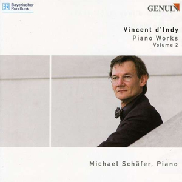
D'Indy : oeuvres pour piano
En France, hormis Paul Dukas, la désertion fut réelle : Gabriel Fauré (1845-1924), Claude Debussy (1862-1918), Albert Roussel (1869-1937), Maurice Ravel (1875-1937) et Francis Poulenc (1899-1963) boudèrent le genre (tous ont pourtant écrit de merveilleuses sonates pour deux instruments). Aux côtés de Vincent d'Indy (Petite Sonate, opus 9, et Grande Sonate, opus 63, rassemblées sur un CD recommandable paru chez Genuin), il faut regarder vers des musiciens beaucoup moins fréquentés : appréciez cette belle Sonate en ut majeur de Marie Jaëll (1846-1925) qui se souvient avec bonheur des maîtres germaniques (Beethoven, Schumann et Brahms en particulier) ou encore celle, n°2, de Benjamin Godard (1849-1895), un musicien à peine passé à la postérité grâce à une Berceuse (de Jocelyn) que nos grands-mères aimaient tant, surtout lorsque Beniamino Gigli la chantait ! La génération suivante se sentit à peine plus concernée : Darius Milhaud (1892-1974) a été plutôt chiche avec deux sonates (n°1) noyées dans un catalogue pourtant pléthorique (plus de 400 oeuvres répertoriées !). André Jolivet (1905-1974) risque de vous décourager avec ses Sonates n°1 et n°2. Henri Dutilleux (1916-2013) n'a pas été plus généreux avec son unique Sonate mais attention, c'est un chef-d'oeuvre incontournable à fréquenter d'urgence ! Je n'en dirai pas autant de l'énorme (50 minutes !) Sonate de Jean Barraqué (1928-1973) et là, quoi que je dise, je prends un risque : soit de passer pour un fossile frileux qui ne comprend rien à la modernité soit de perdre mes derniers lecteurs, refusant désormais de suivre mes recommandations. Les trois sonates de Pierre Boulez (1925- ) (n°2, n°3) sont d'ailleurs à ranger dans le même tiroir. Je vous suggère plutôt de vous orienter vers la Sonate n°1 "La Ville" de Philippe Manoury (1952- ), oeuvre certes à peine moins moderne que les précédentes mais d'une inventivité qui sait rester ludique ou la Sonate n°2 de Nicolas Bacri (1961- ). La Sonate n°5 de Stephane Blet (1969- ) vous posera davantage de problèmes.
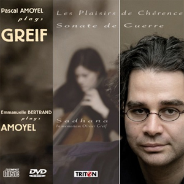
Greif : les Sonates
Enfin, il faut que j'insiste à nouveau sur l'oeuvre magistrale d'Olivier Greif (1950-2000), décrite par ailleurs sur ce site. Ses 22 Sonates sont un monument incontournable de la littérature pianistique du 20ème siècle et il est incompréhensible qu'aucune intégrale n'existe à ce jour, en particulier à cause de lacunes d'édition. Pour rappel, sont actuellement disponibles à l'écoute, les Sonates : n°2 (Suite pour Piano, opus 6), n°5 (Trois Pièces, opus 26), n°14 (Dans le Goût ancien, opus 48), n°15 (De Guerre, opus 54) , n°20 (Le Rêve du Monde, opus 290), n°21 (Codex Domini, opus 303) et n°22 (Les Plaisirs de Chérence, opus 319, patientez 45 secondes).
En Allemagne comme en Autriche, il ne s'est, dans un premier temps, pas trouvé grand monde pour suivre l'exemple de Mendelssohn, Schumann et Brahms. La présence de Richard Wagner (1813-1883) peut surprendre et cependant sa 3ème Sonate (1853) (la dernière et la plus personnelle) distille un lyrisme brûlant, reflet de la passion du compositeur pour Mathilde Wesendonck. A ses côtés, Julius Reubke (1834-1858) (Sonate en si bémol mineur), Felix Draeseke (1835-1913) (belle Sonate quasi una fantasia) et Robert Fuchs (1847-1927) (Sonate n°3) paraissent bien isolés. Pourtant la sonate a redressé la tête une bonne génération plus tard : Richard Strauss (1864-1949) (Sonate opus 5), Alban Berg (1885-1935) (Sonate, opus 1, une oeuvre de jeunesse évidemment), Philipp Jarnach (1892-1982), d'origine espagnole et né en France (Sonate n°2, à écouter), Marcel Tyberg (1893-1944) (Sonate n°2, à écouter), Erwin Schulhoff (1894-1942) (n°1), Paul Hindemith (1895-1963) (n°1, n°2, n°3), Wolfgang Korngold (1897-1957) (n°1, n°2), Viktor Ullmann (1898-1944) (n°2, n°7, à découvrir), Hanns Eisler (1898-1962) (n°1), Ernst Krenek (1900-1991) (n°2, n°3, n°7), Karl Amadeus Hartmann (1905-1963) (Sonate n°2 "27 Avril 1945", superbe marche funèbre, à écouter) et Harald Genzmer (1909-2007) (Sonate n°5) ont honoré le genre avec talent. J'ai gardé pour les plus curieux l'exemple de Franz Theodor Reizenstein (1911-1968), un musicien bien injustement oublié, jamais vraiment pris au sérieux, sans doute à cause de sa participation aux fantaisistes Concerts Hoffnung et pourtant ... (Sonate).
En Europe centrale, Bedrich Smetana (1824-1884) et Anton Dvorak (1841-1904) n'ont pas contribué au genre (notez cependant la Sonate à 8 (!) mains du premier nommé). Le Morave Ignaz Brüll (1846-1907) était apprécié de Brahms et c'est une chance de pouvoir entendre sa Sonate, opus 73. Leos Janacek (1854-1928) fut génial, comme toujours, dans sa Sonate 1.X.1905 (Un titre étrange qui commémore la mort, à cette date, d'un manifestant en place de Brno). Si Bela Bartok (1881-1945), Bohuslav Martinu (1890-1959) et, plus près de nous, Attila Bozay (1939- ) n'ont contribué que ponctuellement, la surprise la plus agréable est venue de Georges Enescu (1881-1955) (Sonates n°1 et n°3) qu'on n'attendait guère aussi expert au clavier qu'il l'était au violon, à consommer sans modération !
En Europe de l'Est, singulièrement en Pologne, je vous invite à faire la connaissance de Felix Blumenfeld (1863-1931), bien moins connu que ses neveux Heinrich Neuhaus et Karol Szymanowski, mais dont la Sonata fantasia (début, fin) devrait ravir plus d'un amateur de piano romantique. La Grande Sonate de Leopold Godowsky (1870-1938), le pianiste prodige par excellence, détient sans doute le record du nombre de notes par cm de portée. Enfin ne manquez pas les 3 Sonates de Karol Szymanowski (1882-1937) (n°1, n°2, n°3), la Sonate n°2 de Grażyna Bacewicz (1909-1969) (attention chef-d'oeuvre : part 1, part 2, part 3), celle de Kazimierz Serocki (1922-1981) (Sonate) et l'opus 1 de Henryk Mikołaj Gorecki (1933-2010), une oeuvre de jeunesse alors que le musicien se cherchait encore. Autres perles, estoniennes cette fois, la Sonate n°2 de Raimo Kangro (1949-2001) et la postmoderne Sonate d'Erkki-Sven Tüür (1959- ).
En Scandinavie, les danois furent les plus actifs : Johan Peter Emilius Hartmann (1805-1900) (Sonate en fa majeur), Niels Viggo Bentzon (1919-2000) (Sonate n°5), Poul Ruders (1949- ) (Sonates n°1 & 2). Dommage que je n'ai pas trouvé d'illustration de la sonate, opus 26, de Victor Bendix (1851-1926), un musicien qui a écrit beaucoup de belles choses. En Suède, Wilhelm Stenhammar (1871-1927) (Sonate n°4) fut bien isolé au contraire des norvégiens, Christian Sinding (1856-1941) (Sonate, opus 91), Klaus Egge (1906-1979) (Deux Sonates rassemblées sur un beau CD paru chez Simax, le genre de découverte que l'on aimerait faire tous les jours) mais aussi Geirr Tveitt (1908-1981), qui en a écrit une ribambelle (Sonate n°29). Enfin, en Finlande, outre Sibelius, Selim Palmgren (1878-1951) (Sonate, opus 11) et Einojuhani Rautavaara (1928- ) (n°1, n°2) n'ont écrit que des sonates de jeunesse.
Enfin voici un rapide tour d'autres horizons :
En Hollande, Willem Pijper (1894-1947) (Sonate) et Tristan Keuris (1946-1996) (Sonate).
En Belgique, la Sonate de Guillaume Lekeu (1870-1894) devrait retenir votre attention. A l'écoute de cette belle Suite en forme de sonate (Part 1, Part 2, Part 3, Part 4, Part 5) vous regretterez comme moi que Joseph Jongen (1873-1953) n'ai pas davantage écrit pour cette grande forme.
En Italie, Ottorino Respighi (1879-1936) fut excellent (comme souvent) dans cette Sonate en fa mineur; écoutez encore : Giorgio Federico Ghedini (1892-1965) (Sonate n°4, à ne pas manquer !), Giacinto Scelsi (1905-1988) (Sonate n°3, idem !) et, plus difficile mais votre effort sera récompensé, Luciano Berio (1925-2003) (Sonate).
Le yougoslave, enfin croate, Ivo Maček (1914-2002) risque de vous surprendre (agréablement) avec sa Sonate.
Au Portugal, Fernando Lopes-Graça (1906-1994) a compté parmi les plus généreux avec ses 6 opus (Sonate n°5).
En Espagne, Isaac Albeniz (1860-1909) (Sonate n°5), Joaquin Turina (1882-1949) (Sonate, opus 3) et Joaquim Homs (1906-2003) (Sonate n°2).
Le pianiste turc, Fazil Say, se consacre de plus en plus à la composition. Sa Troy sonata présente la particularité de comporter 10 mouvements consacrés aux acteurs de la fameuse légende troyenne (Achille dans l'exemple proposé).
Le néo zélandais Douglas Lilburn (1915-2001) (6 sonates : n°5, plages 24 à 26 et n°6, plages 9 à 11) et l'australien Carl Vine (Sonates n°1, n°3) sont tous deux à découvrir !
La canadienne d'origine russe Sophie-Carmen Eckhardt-Gramatté (1901-1974) a écrit 6 oeuvres qui ont reçu les faveurs de Marc-André Hamelin (Sonate n°6).
Enfin en Amérique du Sud, l'argentin Alberto Ginastera (1916-1983) Sonate n°1, opus 22, et le guatémaltèque manuel Martinez-Sobral (Sonate) ferment la marche.
Cette chronique étant aussi certainement qu'inévitablement incomplète, je me ferai un devoir de prendre en considération les réclamations émanant de quelques lecteurs scandalisés par un oubli majeur.
Quelques mots, à présent, pour saluer les interprètes sans lesquels toutes ces partitions seraient inaccessibles au plus grand nombre. A leur sujet, saviez-vous que Wilhelm Kempff (1895-1991) (Sonate, opus 47) et John Ogdon (1937-1989) (Sonate n°4) avaient également composé (ce dernier, plus de 200 oeuvres en tous genres constituant un catalogue inexploré) ?
Terminons par un petit quizz destiné à contrôler votre connaissance de quelques grands pianistes et accessoirement vos dons de physionomistes. Les (re)connaissez-vous, sachant qu'il y a un "petit nouveau" ? Sinon promenez la souris !
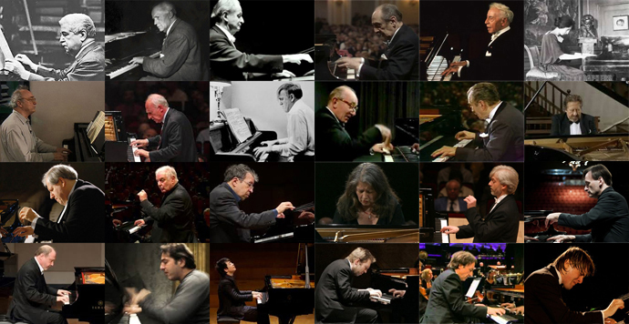
Quelques grands pianistes
Cette galerie est également loin d'être complète : où sont Edwyn Fischer, Walther Gieseking, Yves Nat, Alfred Cortot, Emil Gilels, Georges Cziffra, Radu Lupu, Evgueny Kissin, Dinu Lipatti, etc, la liste est tellement longue que je renonce à la compléter ? J'ai simplement souhaité rendre hommage à quelques ancêtres légendaires, à quelques aînés vénérables, plus quelques pianistes confirmés plus ou moins jeunes. Des présences peuvent surprendre : Stephen Hough incarne la génération anglaise que le label Hyperion a révélée au travers de ses superbes enregistrements et Jean-Efflam Bavouzet est mon pianiste français préféré, il en fallait un, je n'allais quand même pas rallumer la Guerre de 100 ans ! L'intrus - mais plus pour longtemps ! - est un jeune pianiste russe (plus que) prometteur, Daniil Trifonov (1991- ), ici dans les Etudes opus 25 de Chopin. Vainqueur du Concours Tchaïkovski à l'âge de 20 ans seulement, son toucher sensible égale sa virtuosité, il dégage même quelques choses jamais entendues.